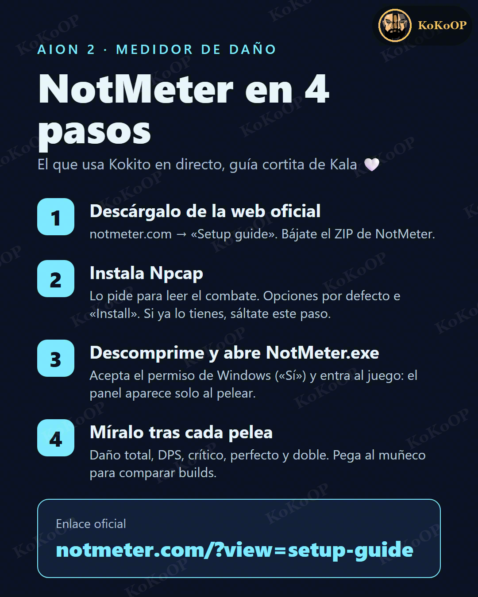

KoKoOP · Guías de AION 2 · por Kala
NotMeter en 4 pasos
El medidor de daño que usa Kokito en directo. Guía cortita de Kala 🤍

- Descárgalo de la web oficialEntra en notmeter.com → Setup guide y bájate el ZIP.
- Instala NpcapLo necesita para leer el combate. Opciones por defecto e «Install». Si ya lo tienes, sáltate este paso.
- Descomprime y abre NotMeter.exeAcepta el permiso de Windows («Sí») y entra al juego: el panel aparece solo cuando peleas.
- Míralo tras cada peleaDaño total, DPS, crítico, perfecto y doble. Pega al muñeco de entrenamiento para comparar builds.
Enlace oficial
notmeter.com/?view=setup-guide